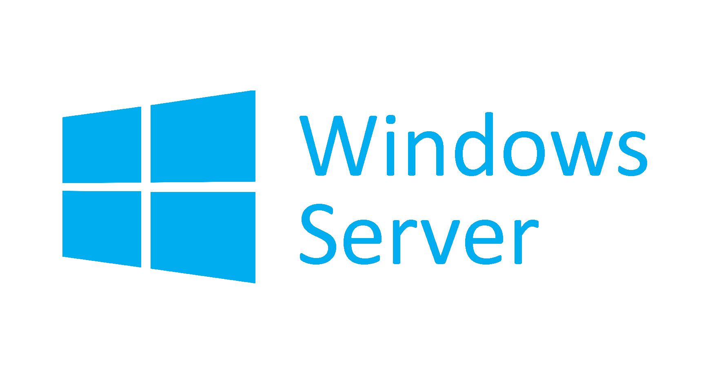

Ce projet avait pour but de relier un serveur linux ou l'on va récolter les logs d'un pc client à travers divers services notamment CRON et SSH les logs sont stockés sur un fichier gérer automatiquement tous les samedi et se supprime après une date de péremption défini.
Nous avons installé deux machines Linux, une qui reçoit les logs en provenance de l’autre machine et une machine cliente sur laquelle on va ouvrir une porte pour communiquer avec les serveurs de logs.
Avec le service Cron on peut automatiser ce que l’on veut comme la copie d’un fichier, sa suppression ou juste lancer la récolte de log via le lancement d’un script.
Nous avons ensuite configurer l’autre machine pour quel communique avec le serveur de log avec le fichier host.